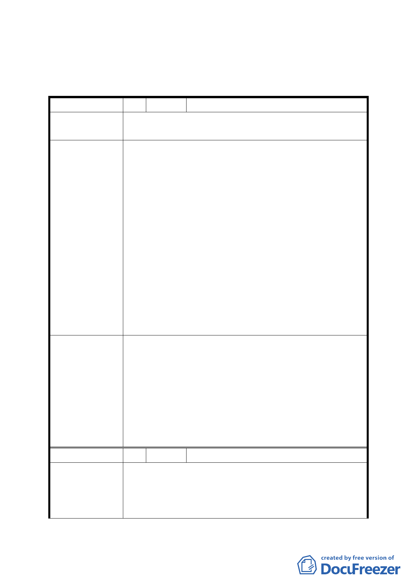

「變更臺北市培英市場用地等 5 處市場用地為機關用地、公園用
地及公共服務設施用地等細部計畫案」
臺北市都市計畫委員會公民或團體所提意見綜理表
編號
陳情理由
建議辦法
委員會決議
編號
陳情理由
1 陳情人 徐曉芳(文山區樟新市場)
由於本里樟新市場用地對面已有一棟重殘中心，因此請
勿重覆設置相同機構。
建議理由:
一、9 月 23 日都發局人員說明曾發函各機關詢問是否需
要辦公建地，只有社會局及新工處有興趣，可見此用
地案並無非常之急迫性及需要性。
二、最近幾年來本區附近之農地已成建築用地、高樓大
廈如雨後春筍般林立，原有之好空氣、好環境、好品
質幾已破壞殆盡，現今僅存此一方空地，若無實際之
迫切需要性，是否可留下給我們里民一個舒適而無壓
迫之空間呢？
建議辦法:
一、請保留原樣之停車空間，因附近之停車位越來越少
且景美女中常辦活動導致停車位經常一位難求。
二、請建公園種樹減少二氧化碳又環保，地上公園、地
下建停車場一舉兩得。
文山區樟新市場同意由原市場用地變更為機關用地。為
避免民眾疑慮並符合其未來使用與開發計畫之彈性，刪
除主辦單位社會局之文字改為臺北市政府，併同刪除計
畫書第 14 頁、第 15 頁變更理由與土地使用分區管制內
「提供身心障礙者長期照顧及住宿服務，以及供公務機
關辦公場所使用」之文字。至於日後機關用地之興闢，
其開發計畫請臺北市政府需求機關考量地區民意需求妥
予規劃設計。
2 陳情人 李融(文山區樟新市場)
一、雖然因消費型態轉變，原市場用地已無使用開闢需
求，但文山區木柵一帶(包括木柵一期重劃區)因應車
輛不斷成長停車需求倍增，且周邊景美女中每年有各
種大型考試考場設置及學校辦理大型活動，另又有樟
-7-